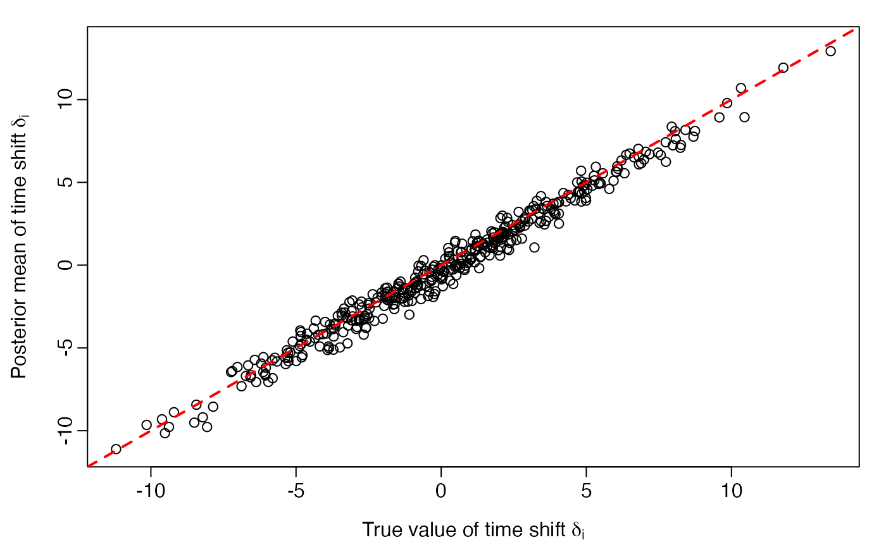

Latent time joint mixed effect model simulation & fit
Dan Li and Michael C. Donohue
simulated_example_ltjmm.Rmd
library(dplyr)
library(tidyr)
library(tibble)
library(ggplot2)
library(ltjmm)
library(bayesplot)
library(posterior)This vignettes demonstrates simulating and fitting latent time joint mixed effect models as described in Li, et al. 2017.
The simulated data includes latent times. Random intercepts and slopes are simulated
Simulate one example dataset
rng_seed <- 20161001
set.seed(rng_seed)
n <- 400 # subjects
p <- 4 # outcomes
t <- 4 # time points
dd <- tibble(
id = 1:n,
age.0 = rnorm(n, 75, 5)) %>%
cross_join(tibble(visit = 1:t)) %>%
mutate(year = (visit-1)*3) %>%
cross_join(tibble(outcome = 1:p)) %>%
arrange(id, outcome, visit) %>%
mutate(
Outcome = factor(outcome, levels = 1:p, labels = paste('Outcome', 1:p)),
Y = NA)
setup_ltjmm <- ltjmm(Y ~ year | 1 | id | outcome, data = dd)
## variance parameters
sigma_y <- c(0.4, 0.4, 0.6, 0.5)
# one less degree of freedom for intercepts due to identifiability constraint:
sigma_alpha0 <- c(0.5, 1, 0.8)
sigma_alpha1 <- c(0.1, 0.1, 0.1, 0.1)
sigma_alpha <- c(sigma_alpha0, sigma_alpha1)
sigma_delta <- 4
N_X <- 1
beta <- matrix(c(1, 0.5, 2, 0.8), p, N_X)
gamma <- c(0.2, 0.3, 0.25, 0.5)
simulated_ltjmm <- simulate(setup_ltjmm,
beta = beta,
gamma = gamma,
sigma_diag = sigma_alpha,
sigma_delta = sigma_delta,
sigma_y = sigma_y,
seed = 201610014)
dd$Y <- simulated_ltjmm$y
ECDF.list <- lapply(unique(dd$outcome), function(oc){
with(subset(dd, outcome == oc), ecdf(Y))
})
IECDF.list <- lapply(unique(dd$outcome), function(oc){
inv.ecdf.data <- with(subset(dd, outcome == oc),
as.numeric(quantile(Y, probs=seq(0,1,by=0.01))))
approxfun(seq(0,1,by=0.01), inv.ecdf.data)
})
dd <- dd %>% mutate(
Q = case_when(
outcome == 1 ~ ECDF.list[[1]](Y),
outcome == 2 ~ ECDF.list[[2]](Y),
outcome == 3 ~ ECDF.list[[3]](Y),
outcome == 4 ~ ECDF.list[[4]](Y),
),
Z = qnorm(Q)) %>%
left_join(tibble(
id = 1:n,
delta_true = simulated_ltjmm$delta), by = 'id')
ggplot(dd, aes(x=year+delta_true, y=Y)) +
geom_line(aes(group=id), alpha =0.2) +
facet_wrap(~Outcome)Simulated outcomes relative to unkown time shift, delta, on the raw scale.
ggplot(dd, aes(x=year+delta_true, y=Q)) +
geom_line(aes(group=id), alpha =0.2) +
facet_wrap(~Outcome)Simulated outcomes relative to unkown time shift, delta, on the quantile scale.
ggplot(dd, aes(x=year+delta_true, y=Z)) +
geom_line(aes(group=id), alpha =0.2) +
facet_wrap(~Outcome)
Simulated outcomes relative to unkown time shift, delta, on the standard normal scale.
Fit LTJMM with independent random effects with Stan
fit <- ltjmm_stan(Y ~ year |
1 | # fixed effects direct on outcome
id | outcome,
data = dd,
seed = rng_seed,
chains = 2, parallel_chains = 2,
iter_warmup = 500, iter_sampling = 500, thin = 2)
# fit$save_object(file = 'sim_results.RDS')
fit.sum <- fit$summary(c("beta", "gamma", "sigma_delta", "delta", "alpha0", "alpha1")) %>%
as.data.frame()
row.names(fit.sum) <- fit.sum %>% pull(variable)
draws.beta <- fit$draws("beta")
draws.gamma <- fit$draws("gamma")
draws.sigma_delta <- fit$draws("sigma_delta")
save(fit.sum, draws.beta, draws.gamma, draws.sigma_delta,
file = 'sim_results.rdata')
load(system.file("testdata", "sim_results.rdata", package="ltjmm"))True versus posterior mean of latent time shifts
delta <- simulated_ltjmm$delta
delta.posteriormean <- fit.sum %>% filter(grepl('delta', variable)) %>%
filter(variable != 'sigma_delta') %>%
pull(mean)
par(mgp = c(2.2, 0.45, 0), tcl = -0.4, mar = c(3.3, 3.6, 1.1, 1.1))
plot(delta, delta.posteriormean,
xlim = range(delta), ylim = range(delta),
xlab = expression(paste("True value of time shift ", delta[i])),
ylab = expression(paste("Posterior mean of time shift ", delta[i])))
abline(0, 1, lwd=2, col='red', lty = 2)
True versus posterior mean of random intercepts and slopes for each outcome
alpha0true <- as.data.frame(simulated_ltjmm$alpha0) %>% mutate(id = 1:n, parameter='alpha0') %>%
gather(outcome, truth, V1:V4)
alpha1true <- as.data.frame(simulated_ltjmm$alpha1) %>% mutate(id = 1:n, parameter='alpha1') %>%
gather(outcome, truth, V1:V4)
alphapm <- data.frame(
parameter.id.outcome = grep('alpha', row.names(fit.sum), value=TRUE),
posterior.mean = fit.sum[grepl('alpha', row.names(fit.sum)), 'mean']) %>%
separate(parameter.id.outcome, c('parameter', 'id', 'outcome', 'other')) %>%
mutate(id = as.numeric(id))
pd <- full_join(alpha0true, alpha1true, by=c('id', 'outcome', 'parameter', 'truth')) %>%
mutate(outcome = gsub('V', '', outcome)) %>%
full_join(alphapm)
ggplot(pd, aes(x=truth, y=posterior.mean)) +
geom_point(aes(shape=parameter, color=parameter), alpha=0.25) +
geom_abline(intercept=0, slope=1) + facet_wrap(~outcome, scales='free')Model prediction plots
nd0 <- expand_grid(
`(Intercept)` = 1,
`year+delta` = seq(-10, 20, by=1),
outcome = 1:p) %>%
cross_join(as_draws_df(draws.beta)) %>%
left_join(as_draws_df(draws.gamma), by = c('.iteration', '.chain', '.draw')) %>%
mutate(
Y = case_when(
outcome == 1 ~
`year+delta`*`gamma[1]` + `beta[1,1]`,
outcome == 2 ~
`year+delta`*`gamma[2]` + `beta[2,1]`,
outcome == 3 ~
`year+delta`*`gamma[3]` + `beta[3,1]`,
outcome == 4 ~
`year+delta`*`gamma[4]` + `beta[4,1]`),
Q = case_when(
outcome == 1 ~ ECDF.list[[1]](Y),
outcome == 2 ~ ECDF.list[[2]](Y),
outcome == 3 ~ ECDF.list[[3]](Y),
outcome == 4 ~ ECDF.list[[4]](Y)))
nd <- nd0 %>%
group_by(outcome, `year+delta`) %>%
summarise(
median_Y = median(Y),
lower.CL_Y = quantile(Y, probs = 0.025)[1],
upper.CL_Y = quantile(Y, probs = 1-0.025)[1],
median_Q = median(Q),
lower.CL_Q = quantile(Q, probs = 0.025)[1],
upper.CL_Q = quantile(Q, probs = 1-0.025)[1]) %>%
pivot_longer(median_Y:upper.CL_Q) %>%
separate(name, into = c('stat', 'scale'), sep = '_') %>%
pivot_wider(names_from = stat, values_from = value) %>%
mutate(
Outcome = factor(outcome, levels = c(1, 2, 3, 4),
labels = paste('Outcome', 1:p)))
dd <- dd %>%
left_join(
tibble(id = 1:n, delta_hat = delta.posteriormean), by = 'id')
ggplot(filter(nd, scale == 'Y'), aes(x=`year+delta`, y=median)) +
geom_line() +
facet_wrap(~Outcome) +
geom_ribbon(aes(ymin=lower.CL, ymax=upper.CL), alpha=0.2, fill='blue') +
geom_point(data = dd, aes(x = year + delta_hat, y = Y), alpha = 0.01) +
ylab('Y')Model predictions and observations on the original scale relative to estimated time shifts.
ggplot(filter(nd, scale == 'Q'), aes(x=`year+delta`, y=median)) +
geom_line() +
facet_wrap(~Outcome) +
geom_ribbon(aes(ymin=lower.CL, ymax=upper.CL), alpha=0.2, fill='blue') +
geom_point(data = dd, aes(x = year + delta_hat, y = Q), alpha = 0.01) +
ylab('Q')Model predictions and observations on the quantile scale relative to estimated time shifts.
ggplot(filter(nd, scale == 'Q'), aes(x=`year+delta`, y=median)) +
geom_line(aes(color = Outcome)) +
geom_ribbon(aes(ymin=lower.CL, ymax=upper.CL, fill=Outcome), alpha=0.2) +
ylab('Q') +
theme(legend.position = 'inside', legend.position.inside = c(0.8, 0.2))
Model predictions and 95% credible intervals on the quantile scale relative to estimated time shifts.
Fit LTJMM with multivariate random effects with Stan
fit <- ltjmm_stan(Y ~ year |
1 | # fixed effects direct on outcome
id | outcome,
random_effects = "multivariate",
data = dd,
seed = rng_seed,
chains = 2, parallel_chains = 2,
iter_warmup = 500, iter_sampling = 500, thin = 2)
# fit$save_object(file = 'sim_lt_multi_results.RDS')
fit.sum <- fit$summary(c("beta", "gamma", "sigma_delta", "delta", "alpha0", "alpha1")) %>%
as.data.frame()
row.names(fit.sum) <- fit.sum %>% pull(variable)
draws.beta <- fit$draws("beta")
draws.gamma <- fit$draws("gamma")
draws.sigma_delta <- fit$draws("sigma_delta")
save(fit.sum, draws.beta, draws.gamma, draws.sigma_delta,
file = 'sim_lt_multi_results.rdata')
load(system.file("testdata", "sim_lt_multi_results.rdata", package="ltjmm"))True versus posterior mean of latent time shifts
delta <- simulated_ltjmm$delta
delta.posteriormean <- fit.sum %>% filter(grepl('delta', variable)) %>%
filter(variable != 'sigma_delta') %>%
pull(mean)
par(mgp = c(2.2, 0.45, 0), tcl = -0.4, mar = c(3.3, 3.6, 1.1, 1.1))
plot(delta, delta.posteriormean,
xlim = range(delta), ylim = range(delta),
xlab = expression(paste("True value of time shift ", delta[i])),
ylab = expression(paste("Posterior mean of time shift ", delta[i])))
abline(0, 1, lwd=2, col='red', lty = 2)True versus posterior mean of random intercepts and slopes for each outcome
alpha0true <- as.data.frame(simulated_ltjmm$alpha0) %>% mutate(id = 1:n, parameter='alpha0') %>%
gather(outcome, truth, V1:V4)
alpha1true <- as.data.frame(simulated_ltjmm$alpha1) %>% mutate(id = 1:n, parameter='alpha1') %>%
gather(outcome, truth, V1:V4)
alphapm <- data.frame(
parameter.id.outcome = grep('alpha', row.names(fit.sum), value=TRUE),
posterior.mean = fit.sum[grepl('alpha', row.names(fit.sum)), 'mean']) %>%
separate(parameter.id.outcome, c('parameter', 'id', 'outcome', 'other')) %>%
mutate(id = as.numeric(id))
pd <- full_join(alpha0true, alpha1true, by=c('id', 'outcome', 'parameter', 'truth')) %>%
mutate(outcome = gsub('V', '', outcome)) %>%
full_join(alphapm)
ggplot(pd, aes(x=truth, y=posterior.mean)) +
geom_point(aes(shape=parameter, color=parameter), alpha=0.25) +
geom_abline(intercept=0, slope=1) + facet_wrap(~outcome, scales='free')Fit joint mixed effect model (JMM) with multivariate random effects with Stan
fit <- ltjmm_stan(Y ~ year |
1 | # fixed effects direct on outcome
id | outcome,
lt = FALSE,
random_effects = "multivariate",
data = dd,
seed = rng_seed,
chains = 2, parallel_chains = 2,
iter_warmup = 250, iter_sampling = 250, thin = 1)
# fit$save_object(file = 'sim_jmm_results.RDS')
fit.sum <- fit$summary(c("beta", "gamma", "alpha0", "alpha1")) %>%
as.data.frame()
row.names(fit.sum) <- fit.sum %>% pull(variable)
draws.beta <- fit$draws("beta")
draws.gamma <- fit$draws("gamma")
save(fit.sum, draws.beta, draws.gamma,
file = 'sim_jmm_results.rdata')
load(system.file("testdata", "sim_jmm_results.rdata", package="ltjmm"))Diagnostic plots
mcmc_trace(draws.beta)Note. Model is mispecified, which might explain poor mixing.
True versus posterior mean of random intercepts and slopes for each outcome
alpha0true <- as.data.frame(simulated_ltjmm$alpha0) %>% mutate(id = 1:n, parameter='alpha0') %>%
gather(outcome, truth, V1:V4)
alpha1true <- as.data.frame(simulated_ltjmm$alpha1) %>% mutate(id = 1:n, parameter='alpha1') %>%
gather(outcome, truth, V1:V4)
alphapm <- data.frame(
parameter.id.outcome = grep('alpha', row.names(fit.sum), value=TRUE),
posterior.mean = fit.sum[grepl('alpha', row.names(fit.sum)), 'mean']) %>%
separate(parameter.id.outcome, c('parameter', 'id', 'outcome', 'other')) %>%
mutate(id = as.numeric(id))
pd <- full_join(alpha0true, alpha1true, by=c('id', 'outcome', 'parameter', 'truth')) %>%
mutate(outcome = gsub('V', '', outcome)) %>%
full_join(alphapm)
ggplot(pd, aes(x=truth, y=posterior.mean)) +
geom_point(aes(shape=parameter, color=parameter), alpha=0.25) +
geom_abline(intercept=0, slope=1) + facet_wrap(~outcome, scales='free')
Note. Model is mispecified, which might explain poor estimation.
Fit mixed effect model (MM) with independent univariate random effects with Stan
fit <- ltjmm_stan(Y ~ year |
1 | # fixed effects direct on outcome
id | outcome,
lt = FALSE,
random_effects = "univariate",
data = dd,
seed = rng_seed,
chains = 2, parallel_chains = 2,
iter_warmup = 250, iter_sampling = 250, thin = 1)
# fit$save_object(file = 'sim_mm_results.RDS')
fit.sum <- fit$summary(c("beta", "gamma", "alpha0", "alpha1")) %>%
as.data.frame()
row.names(fit.sum) <- fit.sum %>% pull(variable)
draws.beta <- fit$draws("beta")
draws.gamma <- fit$draws("gamma")
save(fit.sum, draws.beta, draws.gamma,
file = 'sim_mm_results.rdata')
load(system.file("testdata", "sim_mm_results.rdata", package="ltjmm"))Diagnostic plots
mcmc_trace(draws.beta)Note. Model is mispecified, which might explain poor mixing.
mcmc_trace(draws.gamma)Note. Model is mispecified, which might explain poor mixing.
True versus posterior mean of random intercepts and slopes for each outcome
alpha0true <- as.data.frame(simulated_ltjmm$alpha0) %>% mutate(id = 1:n, parameter='alpha0') %>%
gather(outcome, truth, V1:V4)
alpha1true <- as.data.frame(simulated_ltjmm$alpha1) %>% mutate(id = 1:n, parameter='alpha1') %>%
gather(outcome, truth, V1:V4)
alphapm <- data.frame(
parameter.id.outcome = grep('alpha', row.names(fit.sum), value=TRUE),
posterior.mean = fit.sum[grepl('alpha', row.names(fit.sum)), 'mean']) %>%
separate(parameter.id.outcome, c('parameter', 'id', 'outcome', 'other')) %>%
mutate(id = as.numeric(id))
pd <- full_join(alpha0true, alpha1true, by=c('id', 'outcome', 'parameter', 'truth')) %>%
mutate(outcome = gsub('V', '', outcome)) %>%
full_join(alphapm)
ggplot(pd, aes(x=truth, y=posterior.mean)) +
geom_point(aes(shape=parameter, color=parameter), alpha=0.25) +
geom_abline(intercept=0, slope=1) + facet_wrap(~outcome, scales='free')Note. Model is mispecified, which might explain poor estimation.